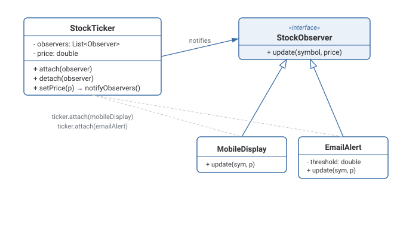

Observer Pattern
Lets a Subject broadcast state changes to an open-ended list of Observers, without the Subject knowing anything about their concrete types.
Theory
The problem, in plain terms
You're building a stock ticker. When a stock's price changes, three different parts of your app need to react: a mobile widget that redraws itself, an email alert service that fires off a message if the price crosses a threshold, and a logging service that records every tick for later analysis. The naive approach is to hard-code all three reactions directly inside the code that updates the price — but now that code has to know about every consumer, and adding a fourth consumer means going back and editing the price-update code again.
Observer flips the dependency around. The thing that changes (the Subject, here the stock ticker) doesn't know or care what's watching it — it just keeps a list of Observers and calls a single method on each of them, update(), whenever its state changes. Adding a new reaction to a price change means writing a new class that implements Observer and registering it — zero changes to the ticker itself.
How it's built
The Subject maintains a list of registered Observers and exposes attach(observer) / detach(observer) methods to manage that list, plus a notifyObservers() method that loops through the list and calls update() on each one. Concrete Observers implement update() however they see fit — updating a display, sending an alert, writing a log line. The Subject typically calls notifyObservers() right after any state change that observers care about.
Always pair attach() with a working detach(), and actually call it when an Observer no longer needs updates — otherwise the Subject keeps it alive indefinitely.
Registering an Observer and forgetting to ever detach it — a classic, hard-to-spot memory leak in long-running UI apps and services.
Push vs. pull notification
There are two common styles for what update() receives. In the push style, the Subject passes the changed data directly as arguments (update(newPrice)) — simple, but couples the Observer interface to exactly what data the Subject happens to send. In the pull style, update() receives a reference to the Subject itself, and the Observer calls getters on it to pull whatever data it actually needs (update(subject), then subject.getPrice()) — more flexible when different observers need different subsets of state, at the cost of a slightly heavier interface.
Where it bites you
If Subjects hold strong references to Observers and Observers are never explicitly detached, you get a memory leak — an Observer that should have been garbage collected stays alive because the Subject still references it. This is common enough in UI frameworks that some implementations use weak references specifically to avoid it. Also, if notifyObservers() triggers a long chain of updates that themselves cause further state changes, you can end up with subtle infinite update loops if you're not careful about what triggers what.
Diagram

When to Use
- Multiple, potentially unknown-in-advance parts of the system need to react to a single object's state changes.
- You want to add or remove reactions to an event without modifying the thing producing the event.
- The Subject and its Observers should be decoupled — the Subject shouldn't need to import or know the concrete types of everything watching it.
- There's exactly one consumer of the change, permanently — a direct method call is simpler and easier to trace than an indirection layer.
- Notification order matters strictly and observers have interdependencies — that usually signals you want Mediator instead.
What interviewers are actually listening for: recognizing this as the backbone of event-driven and reactive systems (pub/sub, GUI event listeners, MVC's model-notifies-view relationship) rather than treating it as an isolated toy pattern. Also, naming the memory-leak risk of Subjects holding onto Observers that were never detached, and knowing the push-vs-pull tradeoff for what data update() carries.
Real-World Examples
- GUI event listeners — a button doesn't know what code runs when it's clicked; it just notifies every registered click listener.
- MVC architecture — the Model notifies registered Views whenever its data changes, so the View can re-render without the Model knowing anything about rendering.
- Pub/sub messaging systems (Kafka topics, Redis pub/sub) — publishers emit events without knowing which or how many subscribers exist.
- RxJS / reactive streams — Observables notify subscribed Observers whenever a new value is emitted.
- Spreadsheet formula recalculation — changing one cell notifies every dependent cell/formula that references it, triggering a recalculation.
- Node.js
EventEmitter— a direct, widely used implementation of the Observer pattern in the standard library.
Interview Questions
Click a question to reveal the answer.
What problem does Observer solve that a direct method call doesn't?
A direct method call requires the caller to know exactly who it's calling — adding a new reaction means editing the caller. Observer lets the Subject broadcast a single notification to an open-ended, changeable list of Observers it knows nothing about concretely, so new reactions can be added or removed without touching the Subject's code.
What's the difference between "push" and "pull" notification styles?
Push: the Subject sends the changed data directly as arguments to update(), e.g. update(newPrice) — simple, but couples the Observer interface to exactly what the Subject decides to send. Pull: update() receives a reference to the Subject itself, and the Observer calls getters to retrieve whatever it needs — more flexible for observers with differing data needs, slightly heavier interface.
How can Observer cause a memory leak, and how do you avoid it?
If a Subject holds strong references to Observers and an Observer is never explicitly detached, the Subject keeps it alive even after the rest of the program is done with it — garbage collectors can't reclaim it. Fix: always provide and call a detach()/unsubscribe method when an Observer is no longer needed, or use weak references from the Subject's side so Observers can still be collected.
How is Observer different from Mediator, since both deal with communication between objects?
Observer is one-directional and typically one-to-many: a Subject broadcasts state changes to Observers, who don't talk back through the Subject. Mediator coordinates many-to-many communication between a set of Colleague objects that would otherwise need direct references to each other — the Mediator actively directs traffic between them, rather than just broadcasting a single event.
Code & Output
Same pattern, four languages. Every output shown here was captured from a real run — note EmailAlert only fires once the price crosses $100, and stops firing entirely once detached.